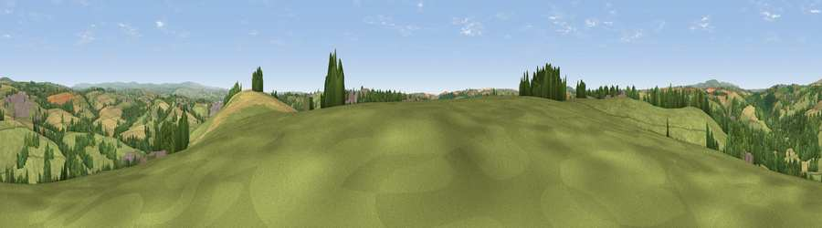

Viewpoint near Landrake
#13520 in England · top 23% of its area beats it · near LandrakeThe view, rendered

A 360° render of this exact spot computed from the terrain model, tree cover and land cover — summer colours, afternoon light, calibrated against photographs of famous viewpoints. Real trees, hedges and buildings will differ in detail.
The panorama
Grey silhouette: terrain skyline in each direction (720 bearings, Earth curvature and refraction included). Dashed green: skyline with trees (+15 m) and buildings (+8 m) as obstacles. Blue strip: how far the ground is visible on each bearing.
Where the view opens
Wedge length = distance to the farthest visible ground on that bearing (vegetation-aware). Rings at 10, 25 and 50 km.
What fills the view
58% grassland · 20% cropland · 19% woodland · 3% built-up
Angular shares of the visible panorama (visual magnitude), not map area. Landscape diversity 0.46 (0–1 Shannon).
Key numbers
More beautiful places nearby
The staircase of upgrades: each row has a higher view potential than everything closer. Driving times are estimates from straight-line distance, calibrated against real road routing — check an actual route before setting out.
| Place | Direction | Drive | Score |
|---|---|---|---|
| Viewpoint near Landrake | ESE · 1 km | ~2 min | 60.5 |
| Kernock Hill | N · 3 km | ~6 min | 68.6 |
| Viewpoint near Landrake | S · 3 km | ~7 min | 69.4 |
| Viewpoint near Crafthole | SSW · 8 km | ~15 min | 80.5 |
| Viewpoint near Crafthole | SSW · 8 km | ~16 min | 81.0 |
| Viewpoint near Downderry | SSW · 8 km | ~17 min | 83.5 |
| Viewpoint near Polperro | WSW · 21 km | ~35 min | 83.7 |
| Pencarrow Head | WSW · 24 km | ~40 min | 86.0 |
50.43139, -4.29395 · source: screening · position refined by local search. Computed location — check access rights before visiting.